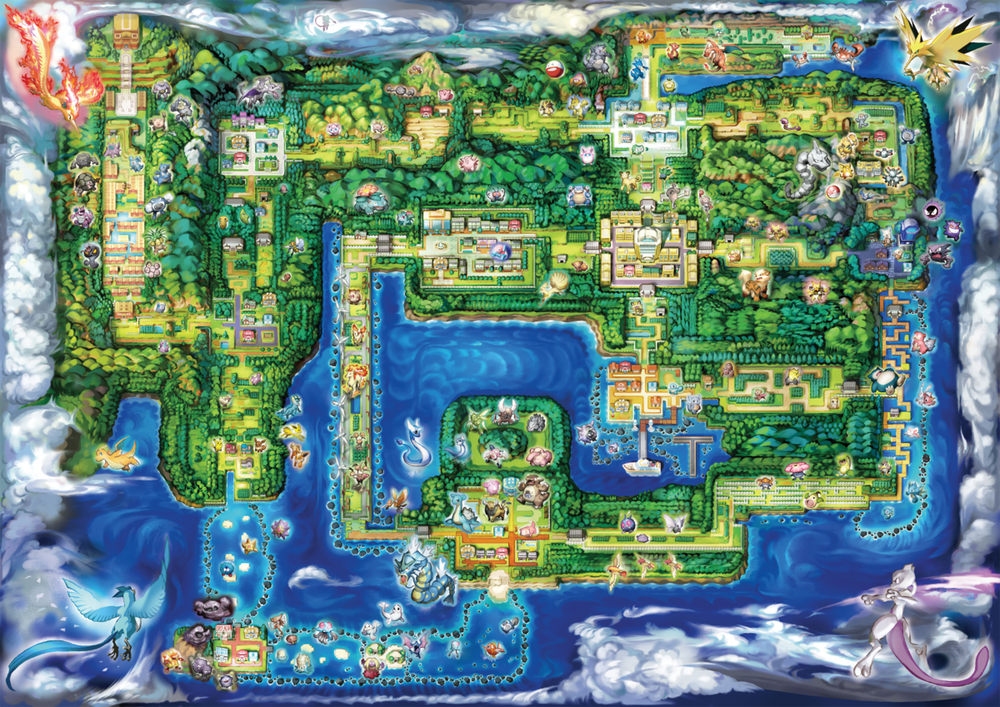

News Pokemon Napping Coding Gaming Friends
Ey!
Pokemon and people are looking at your profile. Find out who.Status: Feeling Awesome
Oshawott
Just Forgot that I had to mention something about my water ability torrent. Yesterday, I came across an intense battle and i was at the point of collapse until i realized my water moves increased in power. This was the first time i witness torrent into play. Im excited.
Tepig

Yes, Oshawott, i too have witness this power, but mine is with the fire power. My ability is Blaze and i first witnessed it around three months ago when I faced a very strong Pidove. I was shoced how much my fire power increased by.
Snivy

I have not yet witness my true power. My ability is called Overgrow, at least that is what Serperior told me. Will one of you or both of you battle with me, so I can bring out my true power? I will buy you guys Poke Puffs after the battle.
Rowlett
Yes Snivy, I will gladly do battle with you, but I am requesting four pokepuffs and some malasadas. Battle take up alot of energy.
Upcoming Events:
Travel to Kanto
Fri. 27 November 2015
ADS
ADS
ADS